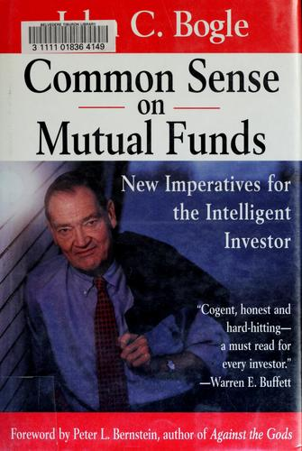

约翰·博格尔（John C. Bogle, 1929—2019）是先锋集团（The Vanguard Group）的创始人，也是世界上第一只面向个人投资者的指数基金的缔造者。1975年，他创建了第一指数投资信托（后更名为先锋500指数基金），这一举措在当时被华尔街嘲讽为"博格尔的愚蠢"，却在此后数十年间彻底改变了全球资产管理行业的格局。《共同基金常识》出版于1999年，是博格尔对其投资哲学最系统、最全面的阐述，2009年推出了十周年纪念版，由耶鲁大学首席投资官大卫·斯文森（David F. Swensen）作序。
全书分为五个部分、二十二个章节，从投资策略、基金选择、业绩评估、行业治理到基金精神依次展开。博格尔的核心论点可以浓缩为几条原则：第一，成本是投资回报最可靠的预测因子——看似微小的管理费和交易成本经过数十年复利累积，会吞噬投资者收益的巨大份额，他称之为"复利成本的暴政"；第二，主动管理型基金经理作为一个整体，在扣除费用后不可能跑赢市场，因此指数基金是大多数投资者获取市场回报的最高效方式；第三，资产配置和长期纪律远比择时和选股重要——"坚持到底"是他反复强调的信条；第四，共同基金行业已经偏离了为投资者服务的初衷，过度追求营销和规模扩张，基金公司与持有人之间存在深刻的利益冲突。
沃伦·巴菲特（Warren Buffett）评价本书"观点清晰、诚实、切中要害——每位投资者必读"（Cogent, honest, and hard-hitting — a must read for every investor）。在2016年致股东的信中，巴菲特更进一步写道："如果要为美国投资者做出最大贡献的人立一座雕像，毫无疑问应该选择杰克·博格尔。"诺贝尔经济学奖得主保罗·萨缪尔森（Paul Samuelson）称赞博格尔"理性的训诫能让数百万储蓄者在二十年内成为邻居们羡慕的对象"。晨星公司总裁唐·菲利普斯（Don Phillips）则直言："这不仅是博格尔写得最好的书，也可能是有史以来关于共同基金写得最好的书。"威廉·伯恩斯坦（William Bernstein）在其"高效前沿"推荐书单中的评价简洁有力："文笔优美、观点鲜明、强烈推荐。"
对于关注投资的读者而言，《共同基金常识》的价值不在于提供某种取巧的赚钱方法，而在于用大量数据和严密逻辑揭示一个朴素的真理：在投资中，简单战胜复杂，低成本战胜高成本，耐心战胜冲动。这本书既是指数投资理念的奠基之作，也是博格尔对整个基金行业的深刻省思，至今仍是理解现代投资最不可或缺的读物之一。